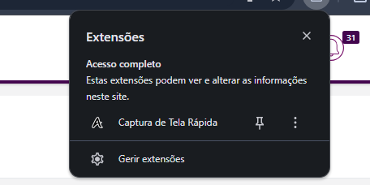
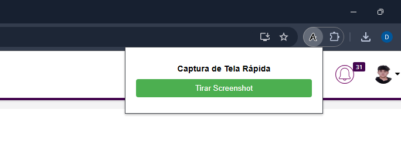
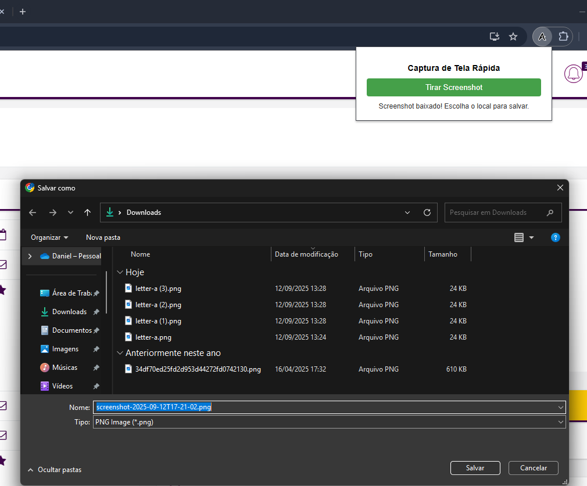
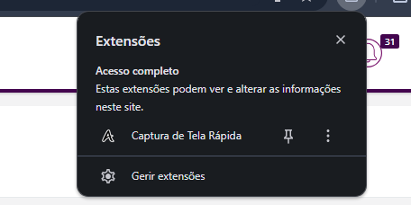
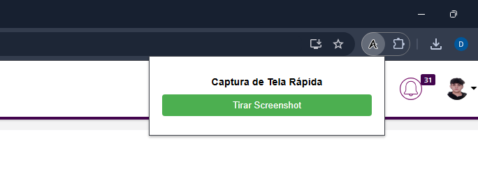
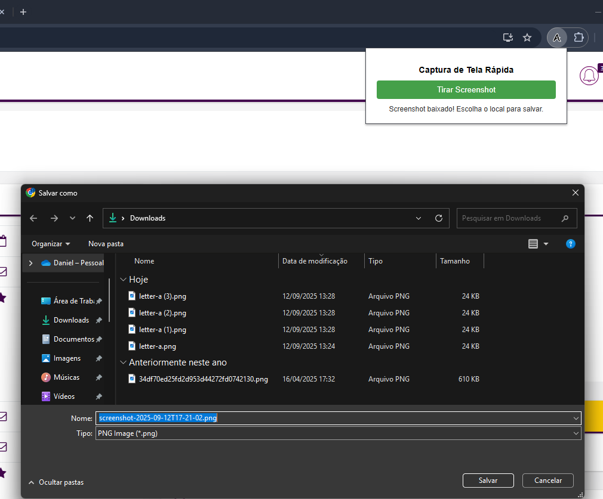

Uma extensão do Chrome (Manifest V3) para capturar screenshots da aba ativa e baixar a imagem com escolha de local.
 





chrome://extensions no Chrome.No Chrome: Configurações > Downloads > Marque "Perguntar onde salvar cada arquivo antes de baixar".
tabs: Para capturar a aba ativadownloads: Para baixar o screenshotactiveTab: Para interagir com a aba atualhttps://*/*, http://*/*: Para funcionar em todas as páginas web